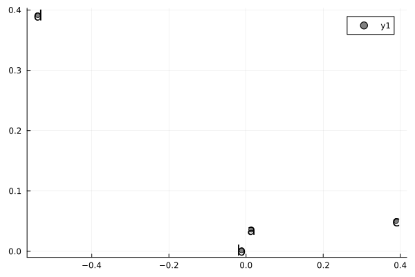
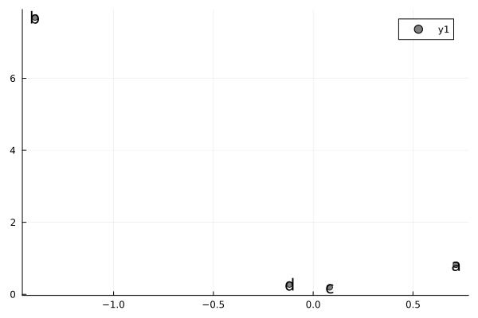
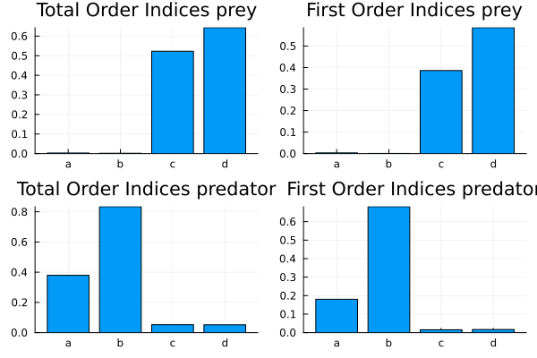

Parallelized Morris and Sobol Sensitivity Analysis of an ODE
Let's run GSA on the Lotka-Volterra model to study the sensitivity of the maximum of predator population and the average prey population.
using GlobalSensitivity, Statistics, OrdinaryDiffEq, QuasiMonteCarlo, PlotsFirst, let's define our model:
function f(du, u, p, t)
du[1] = p[1] * u[1] - p[2] * u[1] * u[2] #prey
du[2] = -p[3] * u[2] + p[4] * u[1] * u[2] #predator
end
u0 = [1.0; 1.0]
tspan = (0.0, 10.0)
p = [1.5, 1.0, 3.0, 1.0]
prob = ODEProblem(f, u0, tspan, p)
t = collect(range(0, stop = 10, length = 200))200-element Vector{Float64}:
0.0
0.05025125628140704
0.10050251256281408
0.1507537688442211
0.20100502512562815
0.25125628140703515
0.3015075376884422
0.35175879396984927
0.4020100502512563
0.45226130653266333
⋮
9.597989949748744
9.64824120603015
9.698492462311558
9.748743718592964
9.798994974874372
9.849246231155778
9.899497487437186
9.949748743718592
10.0Now, let's create a function that takes in a parameter set and calculates the maximum of the predator population and the average of the prey population for those parameter values. To do this, we will make use of the remake function, which creates a new ODEProblem, and use the p keyword argument to set the new parameters:
f1 = function (p)
prob1 = remake(prob; p = p)
sol = solve(prob1, Tsit5(); saveat = t)
[mean(sol[1, :]), maximum(sol[2, :])]
end#2 (generic function with 1 method)Now, let's perform a Morris global sensitivity analysis on this model. We specify that the parameter range is [1,5] for each of the parameters, and thus call:
m = gsa(f1, Morris(total_num_trajectory = 1000, num_trajectory = 150),
[[1.0, 5.0], [1.0, 5.0], [1.0, 5.0], [1.0, 5.0]])GlobalSensitivity.MorrisResult{Matrix{Float64}, Vector{Any}}([0.01343721217053186 -0.011778349872768787 0.3890116663224837 -0.539889483653055; 0.7154224359133188 -1.3940016800360961 0.0825133734505912 -0.11872778040877423], [0.10392491154506957 0.02436524393994605 0.3890116663224837 0.539889483653055; 0.7171622775578733 1.395090282479364 0.3361755350112069 0.3605449375885958], [0.03609836587315969 0.001684439979301237 0.05023780411852113 0.3913997849235959; 0.8185959847110711 7.690850126014347 0.19415257066835598 0.2733108025327637], Any[[[0.08521840592803576, 0.019851976826321654], [0.010646155493667597, 0.37232664226947115], [0.004168295814736407, 0.489043252928197], [0.019490864649933312, 0.401431835791667], [0.0197737708353331, 0.41682886512103645], [0.03446639504079388, 0.242823245465283], [0.03715916115729086, 0.2325015521148855], [-0.03110105559758005, 0.29359153221956474], [-0.03110105559758005, 0.29359153221956474], [0.12805229581632527, 3.9343821244260893] … [0.0103926124409952, 2.5915158941289778], [0.038248269829321314, 3.1132046777014635], [0.038248269829321314, 3.1132046777014635], [0.014122747255467104, 2.727698125428059], [-0.1774948427303253, 1.3682242804405345], [-0.030771439384977253, 0.5604272775385825], [-0.1373868977144275, 0.21599154620364822], [-0.013257532050337794, 0.1845238863584457], [-0.012127738064371776, 0.8353165908714689], [0.01745930930337597, 2.0531771452068144]], [[-0.01769022137457454, -0.01787773520274388], [-0.01105028652182964, -0.005775394859177681], [-0.006592597865282309, -0.6262286637291868], [-0.0005041636588105048, -0.25916123004901764], [-0.00034748423502744874, -0.2573334255554303], [-0.00034748423502744874, -0.2573334255554303], [-0.0006115601484194505, -0.34105654825643245], [-0.0006115601484194505, -0.34105654825643245], [-0.0019637208658942347, -0.3639433692001097], [0.1308317277126511, -15.689217080338018] … [0.010267519225700784, -0.22897174307631854], [0.014259559388172879, -0.26442250217385105], [-0.026972044986996645, -0.016376273216577426], [-0.027130254606153363, -0.012795680672062522], [-0.018297554111495834, -1.886039859182029], [-0.01986941860433029, -1.7512970174809264], [-0.01940688604758892, -1.985417449100114], [0.031101707794272876, -6.513821333197282], [0.031101707794272876, -6.513821333197282], [0.02782148589642977, -6.459084212908219]], [[0.2575795464696389, 0.02432115725987073], [0.2585657515949554, 0.0313523461490229], [0.25538229796557954, 0.04473932623264164], [0.2551577388188979, 0.01659888861848491], [0.3727027878871201, -0.33498923780927514], [0.3727027878871201, -0.33498923780927514], [0.3727027878871201, -0.33498923780927514], [0.3696197783890087, -0.35198348638099086], [0.25937616121278484, 0.28694833445093737], [0.2630668091709646, 0.28719474356483454] … [0.6128543974855323, -0.12602992199083857], [0.6128543974855323, -0.12602992199083857], [0.6126961878663756, -0.12244932944632364], [0.6126961878663756, -0.12244932944632364], [0.6126961878663756, -0.12244932944632364], [0.08841044335949169, -0.849240999719947], [0.10100839507697044, -0.7452663828686792], [0.08710929783124828, -0.8792065213607461], [0.3194450168395961, 0.06206338570199525], [0.3194450168395961, 0.06206338570199525]], [[-0.22556494134684513, -0.0336272137835792], [-0.22556494134684513, -0.0336272137835792], [-0.06487158294049633, 0.34346736530264144], [-0.06209362340670761, 0.33176994423992057], [-0.06585487792371988, 0.36597032851996136], [-0.06585487792371988, 0.36597032851996136], [-0.40876652432086846, -0.3601122855699625], [-0.21957770074579921, 0.08234485988712006], [-0.2228444623431196, -0.0018920813669311854], [-0.13051866084124752, 0.28184018737488414] … [-0.06599844028734501, 0.34790806963703536], [-0.05985500818638294, 0.3804614416868823], [-0.5759495684292372, -0.3799813299674527], [-0.510258577594699, 0.11499769045112224], [-0.510258577594699, 0.11499769045112224], [-0.06763176072051474, 0.46114604518464236], [-0.06763176072051474, 0.46114604518464236], [-0.36032177891492895, -0.39685628800611716], [-0.35929345593986756, -0.3917324395994646], [-0.35929345593986756, -0.3917324395994646]]])Let's get the means and variances from the MorrisResult struct.
m.means2×4 Matrix{Float64}:
0.0134372 -0.0117783 0.389012 -0.539889
0.715422 -1.394 0.0825134 -0.118728m.variances2×4 Matrix{Float64}:
0.0360984 0.00168444 0.0502378 0.3914
0.818596 7.69085 0.194153 0.273311Let's plot the result
scatter(
m.means[1, :], m.variances[1, :], series_annotations = [:a, :b, :c, :d], color = :gray)
scatter(
m.means[2, :], m.variances[2, :], series_annotations = [:a, :b, :c, :d], color = :gray)
For the Sobol method, we can similarly do:
m = gsa(f1, Sobol(), [[1.0, 5.0], [1.0, 5.0], [1.0, 5.0], [1.0, 5.0]], samples = 1000)GlobalSensitivity.SobolResult{Matrix{Float64}, Nothing, Nothing, Nothing}([0.007855678623919856 -0.00013768692630753343 0.3613187366108099 0.5418467803589181; 0.17556896069218972 0.5571796311035127 0.009804039565541151 0.01303795784229046], nothing, nothing, nothing, [0.002785420317208827 0.0020073487283441133 0.4467808351244323 0.633796791980246; 0.3708658874027152 0.7515547292022501 0.048001629114763855 0.05357504724492808], nothing)Direct Use of Design Matrices
For the Sobol Method, we can have more control over the sampled points by generating design matrices. Doing it in this manner lets us directly specify a quasi-Monte Carlo sampling method for the parameter space. Here we use QuasiMonteCarlo.jl to generate the design matrices as follows:
samples = 500
lb = [1.0, 1.0, 1.0, 1.0]
ub = [5.0, 5.0, 5.0, 5.0]
sampler = SobolSample()
A, B = QuasiMonteCarlo.generate_design_matrices(samples, lb, ub, sampler)2-element Vector{Matrix{Float64}}:
[1.0234375 3.0234375 … 4.27734375 2.27734375; 2.9921875 4.9921875 … 1.23828125 3.23828125; 3.7109375 1.7109375 … 4.51953125 2.51953125; 2.1796875 4.1796875 … 2.98046875 4.98046875]
[4.1171875 2.1171875 … 3.37890625 1.37890625; 1.4296875 3.4296875 … 3.43359375 1.43359375; 2.4609375 4.4609375 … 4.72265625 2.72265625; 2.4296875 4.4296875 … 2.33984375 4.33984375]and now we tell it to calculate the Sobol indices on these designs for the function f1 we defined in the Lotka-Volterra example:
sobol_result = gsa(f1, Sobol(), A, B)GlobalSensitivity.SobolResult{Matrix{Float64}, Nothing, Nothing, Nothing}([0.003262329062357596 0.0008479151394403853 0.3861166605049151 0.5857017008864309; 0.18030735028467892 0.6811020777868712 0.015497077775390158 0.016787467758784966], nothing, nothing, nothing, [0.0030820249111739805 0.001782162061204294 0.5227658940133568 0.6434138086084489; 0.37947491137996653 0.8342672817828763 0.05281573377806027 0.052230874260074014], nothing)We plot the first order and total order Sobol Indices for the parameters (a and b).
p1 = bar(["a", "b", "c", "d"], sobol_result.ST[1, :],
title = "Total Order Indices prey", legend = false)
p2 = bar(["a", "b", "c", "d"], sobol_result.S1[1, :],
title = "First Order Indices prey", legend = false)
p1_ = bar(["a", "b", "c", "d"], sobol_result.ST[2, :],
title = "Total Order Indices predator", legend = false)
p2_ = bar(["a", "b", "c", "d"], sobol_result.S1[2, :],
title = "First Order Indices predator", legend = false)
plot(p1, p2, p1_, p2_)
Parallelizing the Global Sensitivity Analysis
In all the previous examples, f(p) was calculated serially. However, we can parallelize our computations by using the batch interface. In the batch interface, each column p[:,i] is a set of parameters, and we output a column for each set of parameters. Here we showcase using the Ensemble Interface to use EnsembleGPUArray to perform automatic multithreaded-parallelization of the ODE solves.
function f(du, u, p, t)
du[1] = p[1] * u[1] - p[2] * u[1] * u[2] #prey
du[2] = -p[3] * u[2] + p[4] * u[1] * u[2] #predator
end
u0 = [1.0; 1.0]
tspan = (0.0, 10.0)
p = [1.5, 1.0, 3.0, 1.0]
prob = ODEProblem(f, u0, tspan, p)
t = collect(range(0, stop = 10, length = 200))
f1 = function (p)
prob_func(prob, i, repeat) = remake(prob; p = p[:, i])
output_func(sol, i) = ([mean(sol[1, :]), maximum(sol[2, :])], false)
ensemble_prob = EnsembleProblem(prob; prob_func = prob_func, output_func = output_func)
sol = solve(
ensemble_prob, Tsit5(), EnsembleThreads(); saveat = t, trajectories = size(p, 2))
out = hcat(sol.u...)
return out
end#5 (generic function with 1 method)And now to do the parallelized calls, we simply add the batch=true keyword argument:
sobol_result = gsa(f1, Sobol(), A, B, batch = true)GlobalSensitivity.SobolResult{Matrix{Float64}, Nothing, Nothing, Nothing}([0.003262329062357596 0.0008479151394403853 0.3861166605049151 0.5857017008864309; 0.18030735028467892 0.6811020777868712 0.015497077775390158 0.016787467758784966], nothing, nothing, nothing, [0.0030820249111739805 0.001782162061204294 0.5227658940133568 0.6434138086084489; 0.37947491137996653 0.8342672817828763 0.05281573377806027 0.052230874260074014], nothing)We can plot the results just as before:
p1 = bar(["a", "b", "c", "d"], sobol_result.ST[1, :],
title = "Total Order Indices prey", legend = false)
p2 = bar(["a", "b", "c", "d"], sobol_result.S1[1, :],
title = "First Order Indices prey", legend = false)
p1_ = bar(["a", "b", "c", "d"], sobol_result.ST[2, :],
title = "Total Order Indices predator", legend = false)
p2_ = bar(["a", "b", "c", "d"], sobol_result.S1[2, :],
title = "First Order Indices predator", legend = false)
plot(p1, p2, p1_, p2_)This user-side parallelism thus allows you to take control, and thus for example you can use DiffEqGPU.jl for automated GPU-parallelism of the ODE-based global sensitivity analysis!